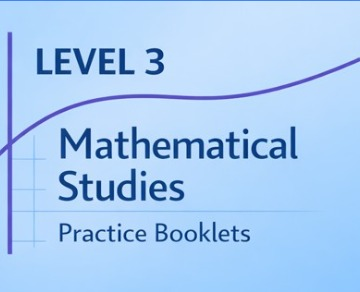

Home / About
About the author
I'm a classroom teacher at Winchmore School, teaching AQA Level 3 Core Maths (Mathematical Studies, spec 1350) alongside my other classes. This site grew out of the notes, slides and practice materials I put together for my own students — I've made it public so any Core Maths student or teacher can use it too.
Core Maths is a brilliant qualification: it's genuinely useful maths — tax, interest, statistics, estimation, data analysis — taught in a way that connects directly to real decisions you'll make in life. My aim with this site is simple: give every topic a clear set of notes, a slide deck, practice worksheets, and exam-style questions with full mark schemes, all in one place, organised exactly like the AQA specification.
Everything here is free to use. If you spot an error or want to suggest an improvement, get in touch through your school.
Practice, structured
Alongside the presentations and worksheets, this site includes structured practice booklets and mock papers for every topic — built to mirror the real exam as closely as possible.
